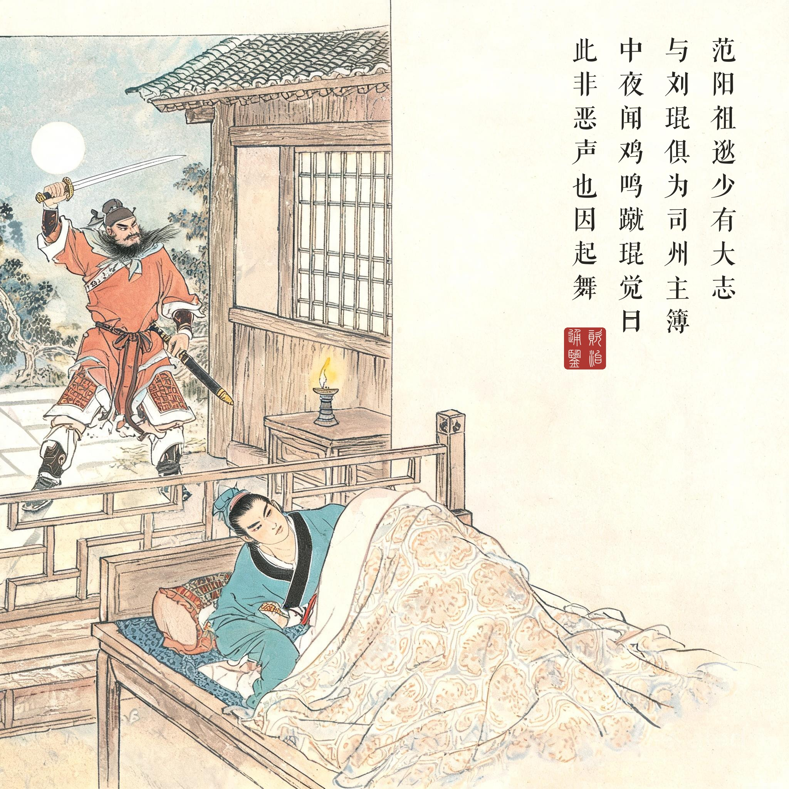
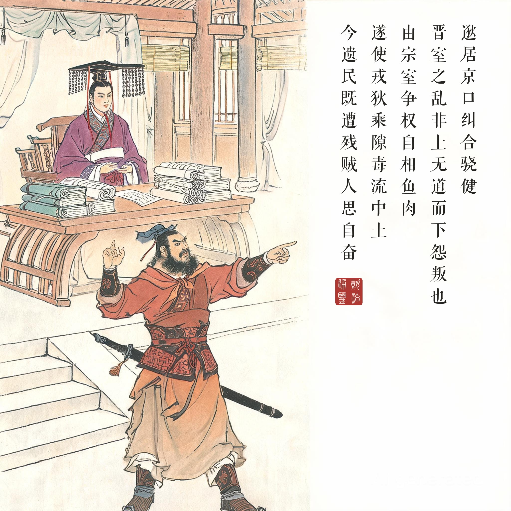
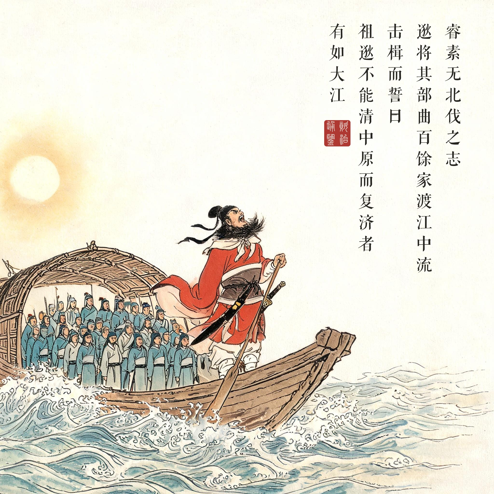
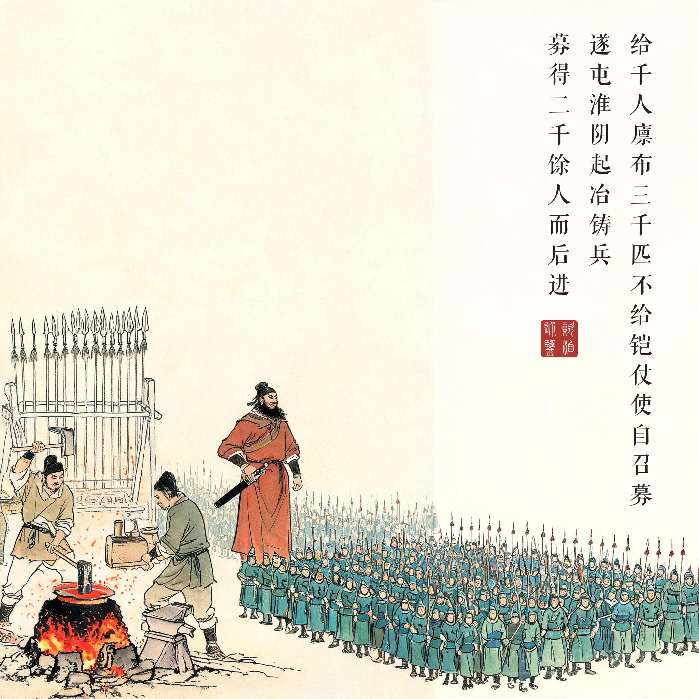

《资治通鉴 · 卷第八十八 · 晋纪十》孝怀皇帝下永嘉六年（公元 312 年）
（据 daizhigev20《资治通鉴》底本节录）
初，范阳祖逖，少有大志，与刘琨俱为司州主簿。同寝，中夜闻鸡鸣，蹴琨觉，曰：“此非恶声也！”因起舞。及渡江，左丞相睿以为军咨祭酒。逖居京口，纠合骁健，言于睿曰：“晋室之乱，非上无道而下怨叛也，由宗室争权，自相鱼肉，遂使戎狄乘隙，毒流中土。今遗民既遭残贼，人思自奋，大王诚能命将出师，使如逖者统之以复中原，郡国豪杰，必有望风响应者矣！”睿素无北伐之志，以逖为奋威将军、豫州刺史，给千人廪，布三千匹，不给铠仗，使自召募。逖将其部曲百馀家渡江，中流，击楫而誓曰：“祖逖不能清中原而复济者，有如大江！”遂屯淮阴，起冶铸兵，募得二千馀人而后进。
当初，范阳人祖逖，少年时便有大志，与刘琨同为司州主簿。同床共寝，半夜听到鸡叫，踢醒刘琨，说：“这不是恶声啊！”于是起身舞剑。到了渡江之后，左丞相司马睿任他为军咨祭酒。祖逖住在京口，聚集骁勇健儿，对司马睿说：“晋室之乱，不是因为皇上无道、下面怨恨反叛，而是宗室争权，自相鱼肉，才让戎狄钻了空子，毒害中原。如今沦陷区遗民惨遭残害，人人思图自强，大王若真能命将出师，让像我祖逖这样的人统领他们恢复中原，各郡国的豪杰，必定有望风响应的！”司马睿素无北伐之志，任命祖逖为奋威将军、豫州刺史，给一千人的粮饷、三千匹布，不给铠甲兵器，让他自己去招募。祖逖率领部曲一百多家渡江，船到中流，敲击船桨立誓说：“我祖逖不能澄清中原而再渡此江者，有如大江！”于是屯驻淮阴，建炉炼铁铸造兵器，招募到两千多人而后北进。
誓言的分量在于本钱的寒酸。读这一回最该注意的数字是：廪千人、布三千匹、铠仗不给。一个朝廷对一个要求北伐的将军给出的全部支持，是布匹而非兵器。所以“击楫而誓”才那么重——这不是奉命出征的凯歌，是一个近乎白手起家者在向江山社稷抵押自己的余生。第三幕的画面重心不在慷慨而在船：一叶小舟，百余家部曲，桨拍在江面上，对面是沦陷的中原。
“此非恶声也”的心理学。《通鉴》开篇记少年祖逖，只挑了半夜鸡叫这一个瞬间。鸡鸣在当时语境里是凶声，祖逖的“此非恶声”是一次认知的翻转——同样一声鸡叫，有人听见凶兆，有人听见起床号。司马光写人物起笔，常常只给一句少年事：这句话定的是一生的基调。
一个人的北伐与一个朝廷的心思。祖逖的四幕是一条完整的弧线：闻鸡起舞（立志）→言于睿（求战）→击楫而誓（立誓）→起冶铸兵（实干）。与这条弧线并行的，是“睿素无北伐之志”的冷淡回应。北伐从来不是能力问题——祖逖证明了一个不给资源的将军能打到黄河；它是意志问题——朝廷的意志不在中原而在江南的偏安。祖逖死后河南得而复失的结局，在第一幕的“同寝”里就已经埋下：这个朝廷配不上它的志士。